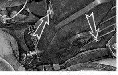
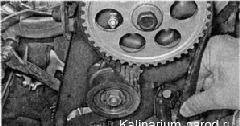
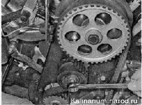
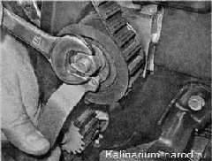

Ремень ГРМ двигателя 1,6 л - проверка состояния и регулировка натяженияРемень привода газораспределительного механизма следует проверять при проведении ТО автомобиля - каждые 15 000) км пробега. Для выполнения работы потребуется ключ для натяжения ремня привода ГРМ. Последовательность выполнения 1. Подготавливаем автомобиль к выполнению работы. 2. Снимаем декоративную накладку двигателя. 3. Ключом на 10 мм отворачиваем три болта крепления передней крышки ремня привода ГРМ. 4. Приподнимаем крышку вертикально вверх, после чего снимаем с двигателя. 5. Вращая коленчатый вал, визуально проверяем состояние ремня. Коленчатый вал можно вращать накидным ключом на 17 мм за болт крепления его шкива или большой шлицевой отверткой за зубья маховика. Для этого следует вынуть резиновую заглушку из отверстия картера сцепления. Ремень должен быть чистый, без грязи и масла на его поверхности. Ремень с надрывами, трещинами, расслоениями, срезанными или изношенными зубьями, потертостями до корда необходимо заменить. 6. Двумя пальцами пробуем повернуть ремень на 90° на участке между щкивами коленчатого и распределительного валов, прилагая к нему усилие 15-20 П-м (1,5 — 2,0 кгс-м). Если прилагаемого усилия не хватает, чтобы повернуть ремень на требуемый угол, — ремень перетянут; если ремень можно развернуть на больший угол , значит ремень натянут недостаточно. Чрезмерное натяжение ремня, попадание на него масла и грязи сокращают срок службы ремня, а также ускоряют износ натяжного ролика и подшипника насоса охлаждающей жидкости. Регулировать натяжение ремня следует на холодном двигателе. 7. Ключом на 17 мм ослабляем затяжку гайки крепления натяжного ролика. 
8. Поворачивая ролик специальным ключом, добиваемся требуемого натяжения ремня и, удерживая ролик в этом положении, затягиваем гайку его крепления. 9. Проверяем натяжение ремня и при необходимости повторяем регулировку. 10. Окончательно затягиваем гайку крепления ролика моментом 11. Устанавливаем на место переднюю крышку ремня и затягиваем болты ее крепления. |